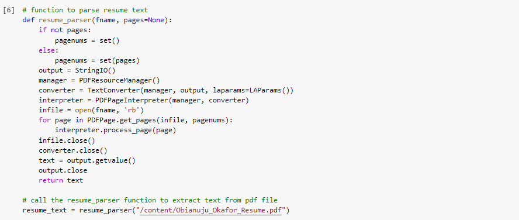
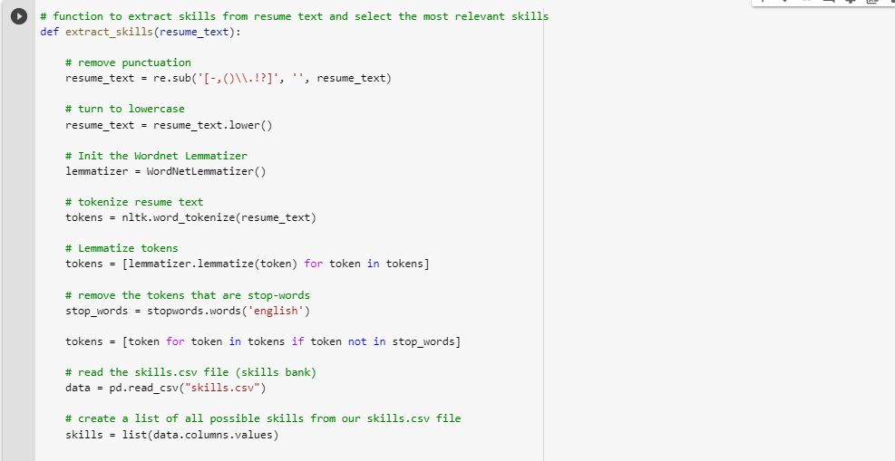
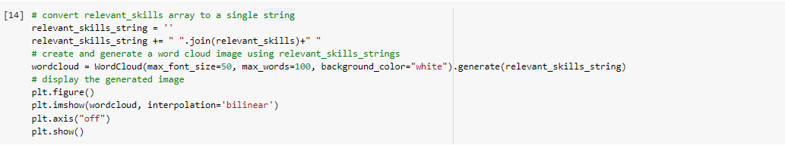

Blog
How to parse your resume to create a word cloud for your Linkedin header
Blog post
A good way to stand out on Linkedin is to use a distinctive header. An option is to extract the most salient skills from you resume and use it to populate a word cloud, which you can then use as a header. In this medium article I give step by step details on how you can accomplish this.
I have broken the process down into five easy steps outlined below. You can find all the code fileshere.
1. Import Libraries
First thing i did was to import all the necessary libraries which will be used in this project.

2. Parse Resume
The next step is to parse the desired resume. To do this, I created a resume_parser() function that uses the PDFResourceManager, PDFPageInterpreter, LAParams, TextConverter from the pdfminer library to extract and return all the text from my resume.
3. Extract Skills
The next step is to extract the most relevant skills from the resume text. How do we know the vital skills to extract? This is done in the extract_skills() function. In this function, I first preprocess the parsed resume text by removing punctuations, converting to lowercase, tokenizing, lemmatizing, and lastly removing stopwords.
After, each of the preprocessed tokens is compared to a set of skills stored in a a csv file 'skills.csv'. This csv file is a compilation of all relevant skills for different career types e.g software engineering, accounting, data analytics etc. After the comparison is done, I add the skills that were a match to an array called relevant skills. Finally the array of relevant skills is returned.
4. Create word cloud
We use the skills in the relevant_skills array to create and generate a word cloud.
5. Edit the word cloud shape to match your Linkedin header
I took it a step further and modified the shape of the word cloud to fit the design of Linkedin headers. Part of the Linkedin header is covered by your profile picture, therefore to prevent important skills from being hidden by your profile picture, I decided to create a world cloud that takes into account the position profile pictures on the header.
I did this by creating a Linkedin header design template using the application Gimp.

Next, I created a mask of this template and used this mask to generate a word cloud. I saved the generated word cloud as an image and used this as my Linkedin header.

The generated image is shown below.
.png)